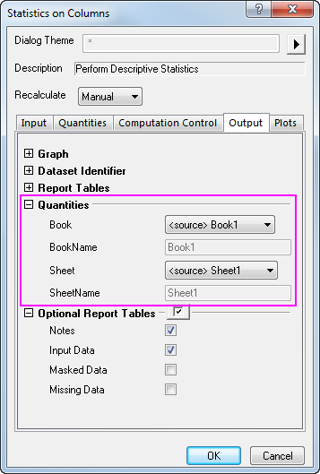

FAQ-729 Kann ich die Ergebnisse der Spaltenstatistik in dem Quellarbeitsblatt anzeigen?
Output-Results-Destination
Letztes Update: 01.06.2015
Anwender können die Spaltenstatistik durchführen und die Ergebnisse in die neuen Spalten des Quellarbeitsblatts mit dem Hilfsmittel Spaltenstatistik eingeben.
- Wählen Sie Statistik: Deskriptive Statistik: Spaltenstatistik.
- Wechseln Sie in dem aufgerufenen Dialog zur Registerkarte Ausgabe, erweitern Sie den Zweig Eigenschaften und legen Sie die Einstellungen wie in dem Bild unten fest.
- 
Origin-Version mind. erforderlich: 2016 SR0
Schlüsselwörter:Deskriptive Statistik, Quellarbeitsblatt, Mittelwert, Standardabweichung, Spalten